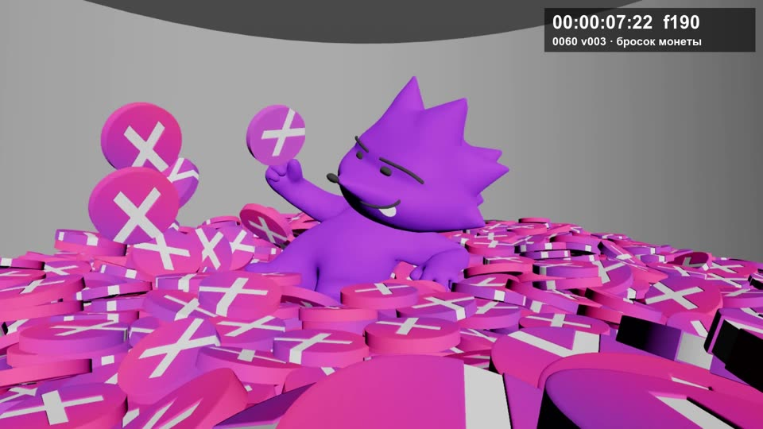

1
Бросок и экран
Ёжик кидает в сторону монетку, после чего появляется экран. Держим его примерно 1,5 секунды, затем переходим к логотипам спонсоров.
Тимур, собрали микросклейку бордоматика, чтобы точнее показать тайминг и динамику финального шота. Ориентируемся на неё как на референс по таймингу и последовательности действий. Номера кадров — по бордоматику: 00:00:07:06 = f174, 24 fps.
Слева — таймкод и номер кадра поверх картинки. Шаг по кадрам стрелками или кнопками, пробел — пауза.
Файл: yandex_sekundnik_final_2011_v4_topshot_f262.mp4 · 1920×1080 · 24 fps · 186 кадров (f174–f359).
Пять шагов, рядом кадры из склейки. Клик по кадру ставит плеер на этот кадр.
Ёжик кидает в сторону монетку, после чего появляется экран. Держим его примерно 1,5 секунды, затем переходим к логотипам спонсоров.
На 262-м фрейме стоит техническая плашка — она обозначает начало движения камеры в Top Shot.
Само движение начинаем примерно на 255–262-м фрейме. По таймингу можно немного двигаться, плюс-минус несколько кадров некритично.
К 300–303-му фрейму камера уже должна прийти к ёжику — в момент, когда он бросает монетку прямо в зрителя.
Завершаем ролик переходом к финальному плюсу.
Что лежит на каждом отрезке. Клик по отрезку ставит плеер на его начало.
Ключевые кадры склейки с номером и таймкодом. Клик ставит плеер на кадр.
Ёжик кидает монетку в сторону (0060 v003).

Бросок, монетка уходит из кадра.
Появляется экран 1 — держим его.
Логотипы спонсоров, партнёр 1.
Техплашка: старт движения камеры в Top Shot.
Партнёр 2. Камера уже в движении.
Партнёр 3. Камера подходит к ёжику.
Партнёр 4. Камера пришла к ёжику (0070 драфт).
Монетка летит прямо в зрителя.
Переход к финальному плюсу.
Последний кадр, лого.